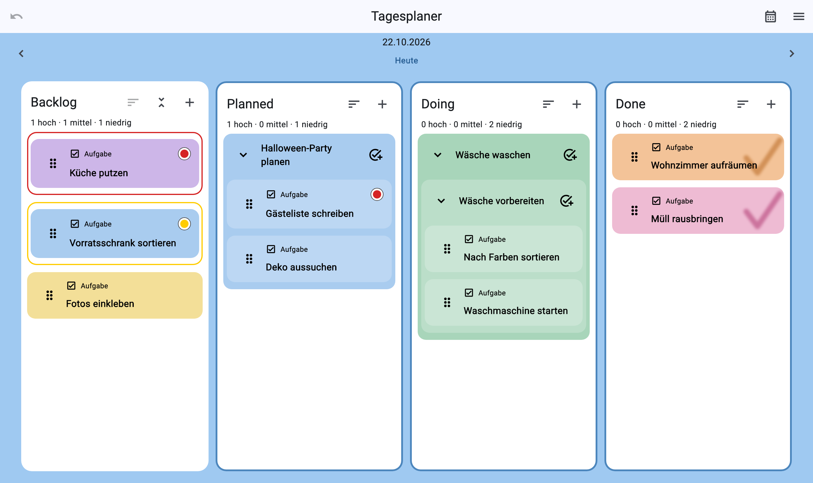
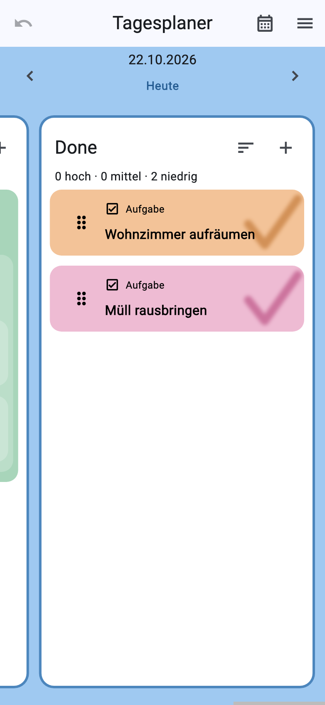
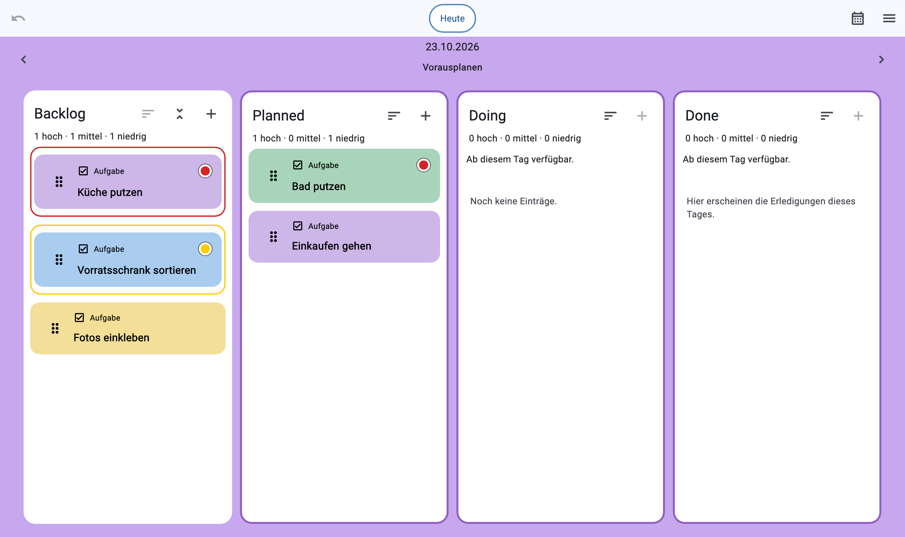
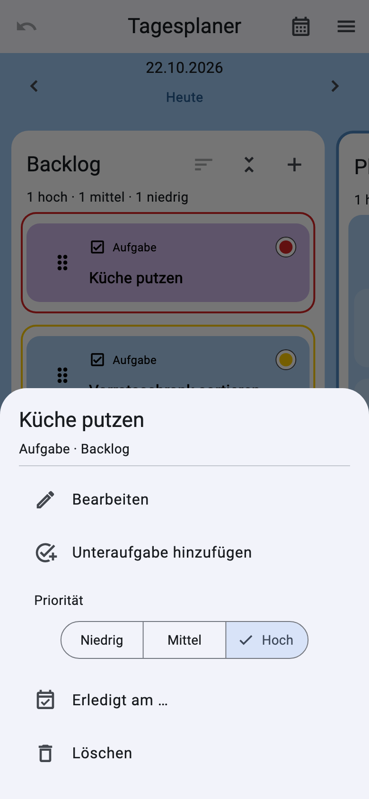
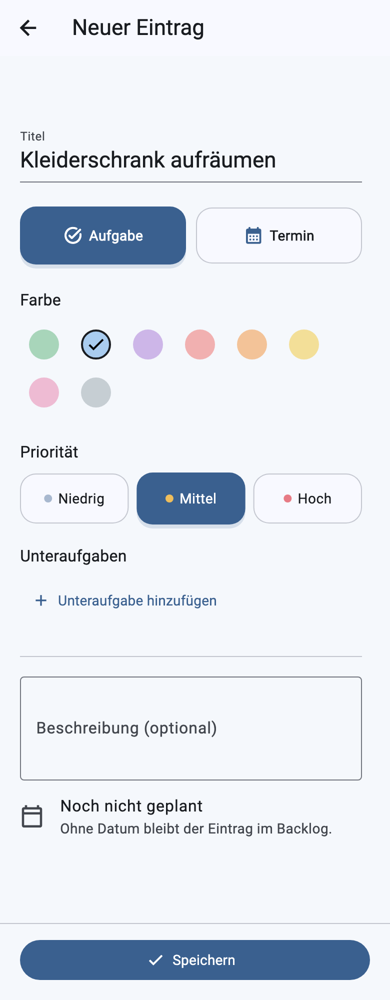
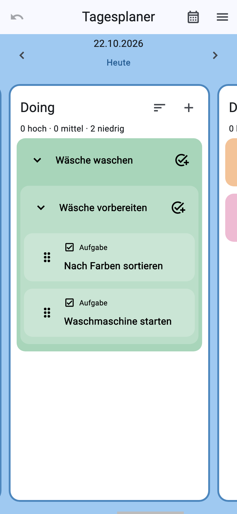

Eigenes Projekt · App-Entwicklung · UX/UI
Tagesplaner
Ich entwickle eine App, in der ich Einfälle sofort festhalte, mir täglich Aufgaben aussuche und am Ende sehe, was ich geschafft habe.

01 · Idee
Einfälle auffangen. Den Tag planen. Fortschritt sehen.
Mir fallen oft To-dos, Ideen und Dinge ein, die ich irgendwann machen möchte – auch wenn gerade keine Zeit dafür ist. Ich wollte einen Ort, an dem ich sie sofort sammeln kann, ohne sie schon einem Tag zuweisen zu müssen.
Am Abend oder am Morgen wähle ich daraus aus, was ich an diesem Tag angehen möchte. Die Done-Spalte ist für mich mehr als eine Statusanzeige: Wenn sich ein Tag unproduktiv anfühlt, zeigt sie mir als sichtbaren Beleg, was ich tatsächlich erledigt habe.
Die App ist für die persönliche Nutzung gedacht. Daten bleiben lokal auf dem Gerät; ein Konto oder Netzwerkdienst ist nicht nötig.
02 · Aktueller Stand
Vom spontanen Einfall zum sichtbaren Erfolg.
Sammeln
Im Backlog halte ich Aufgaben und Ideen fest, sobald sie mir einfallen. Sie können dort ohne Planungstag warten.
Auswählen
Für einen Tag suche ich mir Aufgaben aus dem Backlog aus. Planned und Doing zeigen, was ich vorhabe und woran ich arbeite.
Erfolge sehen
Done zeigt die erledigten Aufgaben des Tages. Beim Abschließen erscheint kurz Konfetti; ein großer Haken bleibt auf der Karte sichtbar.

03 · App-Einblicke
Planung und Aufgaben im Überblick.


04 · UX-Überarbeitung
Die Eingabemaske an meinen Alltag angepasst.
Ich bin die einzige Nutzerin der App. Beim eigenen Gebrauch habe ich beobachtet, welche Angaben ich beim schnellen Festhalten einer Idee tatsächlich brauche. Unnötige Eingaben habe ich entfernt und die übrigen in eine Reihenfolge gebracht, die meinem Ablauf entspricht.
Der Titel steht zuerst, damit ein Gedanke sofort festgehalten ist. Danach folgen Eintragstyp, Farbe, Priorität und Unteraufgaben. Beschreibung und Planungstag kann ich bei Bedarf später ergänzen.

05 · Weiterentwicklung im Alltag
Wichtige Aktionen direkt am richtigen Ort.
Nach der Eingabemaske habe ich die Bedienung des Boards weiter überarbeitet. Die Änderungen vom 17. Oktober 2026 betreffen das Ordnen, Ergänzen, Verschieben und Abschließen von Aufgaben.
Prioritäten schneller überblicken. Rote und gelbe Rahmen gliedern das Backlog nach hoher und mittlerer Priorität. Andere Spalten lassen sich über ein Sortier-Icon nach Priorität ordnen und wieder auf die manuelle Reihenfolge zurückstellen.
Unteraufgaben direkt ergänzen. Ein Button am Gruppentitel fügt eine Unteraufgabe in der jeweiligen Spalte hinzu. Verschachtelte Gruppen und einheitliche Kartenabstände machen die Zusammengehörigkeit sichtbar.
Leichter verschieben und navigieren. Beim Ziehen genügt eine kleine Überlappung mit der Zielspalte. Die Tagespfeile behalten ihre Position; von anderen Tagen führt „Heute“ mittig in der App-Leiste zurück zum aktuellen Tag.
Erledigtes nachtragen. Über „Erledigt am …“ kann ich eine Aufgabe für heute, gestern oder ein gewähltes vergangenes Datum abschließen. Sie erscheint im Rückblick des passenden Tages; die Aktion lässt sich rückgängig machen.
